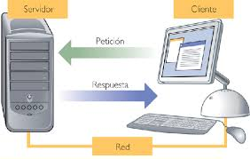
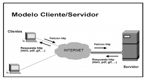
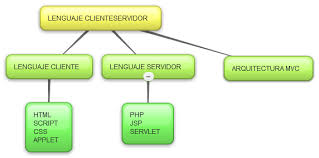

Client/Servidor
L'arquitectura client-servidor és una de les més populars en la construcció d'aplicacions en l'actualitat. Bàsicament es diu així a tota arquitectura en la qual participen dos components: un és el client que utilitza uns serveis, i un altre és el servidor que proporciona eixos serveis. Entre tots dos s'ha d'efectuar una comunicació de xarxa, habitualment mitjançant Internet.
La classificació dels llenguatges de programació des del punt de vista client/Servidor és adequada per a quan siga necessària la programació d'aplicacions Client/Servidor en la qual d'una banda hi haurà una aplicació encarregada de servir les peticions procedents d'aplicacions clients. Un exemple d'aquesta mena d'arquitectura Client/Servidor el tenim en la majoria d'aplicacions web en les quals un programa servidor, situat en un servidor web, tindrà la funció de servir les peticions de cadascuna de les aplicacions web clients que s'executen des de cadascun dels navegadors web.
|  |  |  |